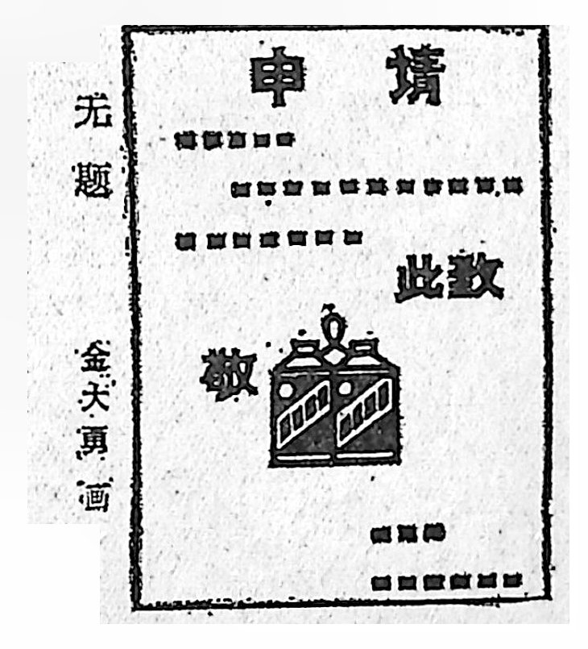

金大勇 《人事》1987年第1期（总第16期），第47页
无题
Untitled
- Text in the drawing
- 申请 / 此致 / 敬
Application / Respectfully [submitted] / [with] salute - Description
- An application form ends with the standard respectful closing — but where the final character, “salute,” should be, two bottles of liquor tied together as a gift are drawn instead.
- Note
- Letters close with 此致敬礼, “herewith, with respectful salute.” 礼 means both “salute” and “gift,” so the drawn bottles turn the courtesy into a bribe.
- Artist
- Jin Dayong 金大勇
- Published in
- 《人事》1987年第1期（总第16期）, p. 47
- Themes
- Paperwork and documents · Gifts and banquets

Cite
Jin Dayong, “无题” [Untitled], Renshi (Personnel) 《人事》, 1987, no. 1, p. 47.